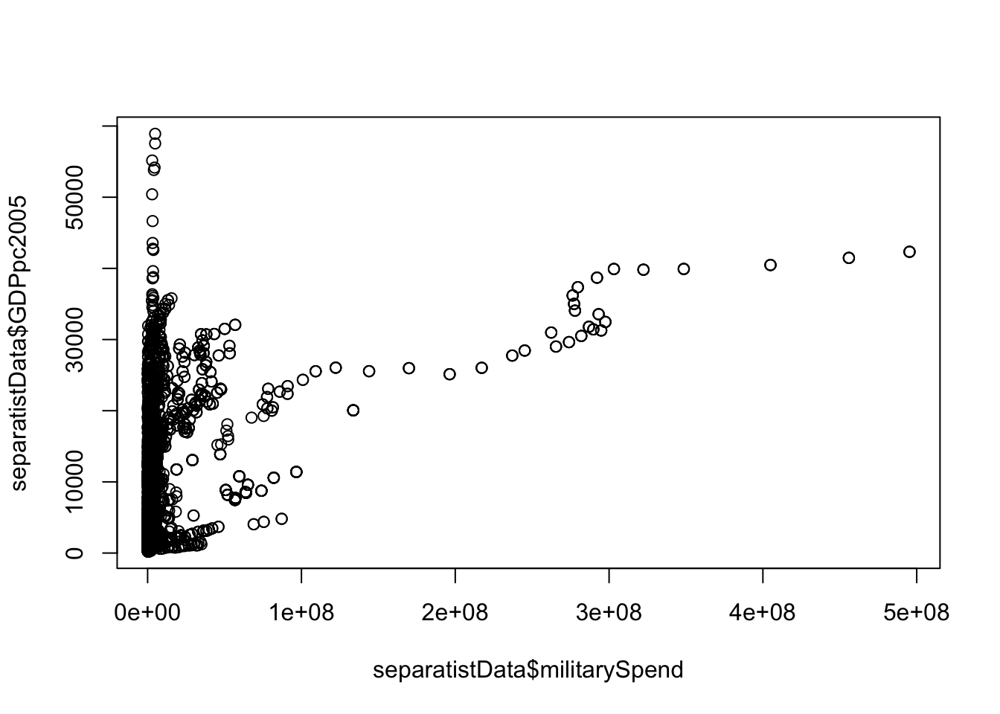
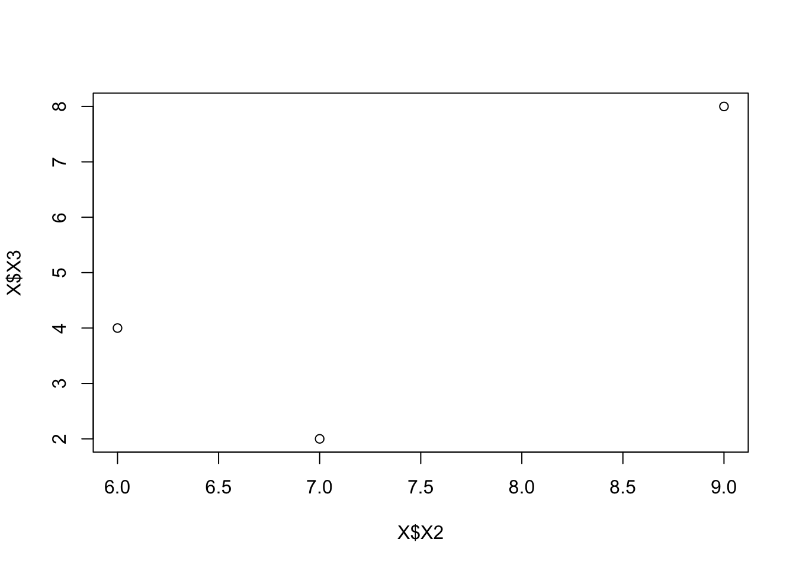

Lab 4: OLS in R
Gloria Cheung
5/18/2021
This week in methods class, we covered different types of hypothesis tests, depending on the level of measurement for the independent and dependent variables.

Hypothesis Testing
| Categorical | Continuous |
|——|————-|————————–|————————-| | DV. | Categorical | Tabular Analysis | Probit / Logit | | Type | Continuous | Difference of Means | Correlation Coefficient |
The agenda in this lab is to demonstrate and execute a basic version of the tests discussed, we will be covering the following:
- Chi-squared test
- T-tests
- Correlation vs Covariance
- Bivariate Linear Regression / Ordinary Least Squares (OLS)
A reminder about hypothesis testing :
- \(H_0\): the variables are independent, there is no relationship between the two variables. Knowing the value of one variable does not help to predict the value of the other variable
- \(H_1\): the variables are dependent, there is a relationship between the two variables. Knowing the value of one variable helps to predict the value of the other variable
1 Chi-squared \(x^2\) test
Remember, a chi-square test typically is used to compare two categorical variables. It works by comparing the observed frequencies to the expected frequencies if there was no relationship between the two variables.
You can do it by hand, and Dr. Siegel goes through this in Lecture 2 Part 1, on slide 54 onwards, when he goes through an example of how to conduct a \(x^2\) test by hand. I will show you how to do this in R as well, using the function chisq.test().
I’m going to run a hypothetical test to see if there is a difference in number of democracies in different regions of the world - it’s hypothetical because there are historical and structural reasons that could explain why some regions have more democracies than others, but we will assume that we want to test this hypothesis using a chi-square test.
First, we always have to check and prepare the data to see if it needs to be cleaned - It seems that the variable region has 6 categories (0, 2, 3, 5, 6, 7), but it is not clear what each of these regions are. - There are two ways to deal with this, either to check the codebook, or if there are also regional dummy variables, to crosscheck region against those dummies - which is what I do in the code below to create a new variable region2 which has the regions specified as a factor / character variable.
load("separatistData.RData")
summary(separatistData$democracy)## Min. 1st Qu. Median Mean 3rd Qu. Max. NA's
## 0.0000 0.0000 0.0000 0.4929 1.0000 1.0000 49table(separatistData$region) # What do these values mean? Either check codebook, or crosscheck for regional dummy variables##
## 0 2 3 5 6 7
## 465 371 889 275 580 115separatistData$region2 <- ifelse(separatistData$eeurop == 1, "eeurope",
ifelse(separatistData$lamerica == 1, "lamerica",
ifelse(separatistData$ssafrica == 1, "ssafrica",
ifelse(separatistData$asia == 1, "asia",
ifelse(separatistData$western == 1, "western",
"others")))))
table(separatistData$region, separatistData$region2)##
## asia eeurope lamerica others ssafrica western
## 0 0 0 0 0 0 465
## 2 0 371 0 0 0 0
## 3 889 0 0 0 0 0
## 5 0 0 0 275 0 0
## 6 0 0 0 0 580 0
## 7 0 0 115 0 0 0chisq.test(separatistData$region2, separatistData$democracy)##
## Pearson's Chi-squared test
##
## data: separatistData$region2 and separatistData$democracy
## X-squared = 1367.4, df = 5, p-value < 2.2e-16- the p-value is 0.001, so we can reject the null hypothesis at the 0.001 significance level.
- Interpreting this, it indicates that the number of democratic countries is significantly different across regions
- For more on some interesting ways to present a contingency table and the difference between the observed and expected values, see Antoine Soetewey’s blog for some examples.
2 T-test or differences in means test
The t-test or difference of means test is is used to determine if the null hypothesis (thaat the means of two samples are equal) can be rejected and that we can infer that the differences between the two samples are statistically significant). It is similar to the chi-squared test, but is better employed when the dependent variable is continuous and the independent variable categorical.
Examples:
- Do republicans and democrats have different feelings toward the military?
- independent variable: political affiliation (categorical)
- dependent variable: feeling thermometer (continuous)
- Does college-level literacy vary across states in the U.S.?
- independent variable: Geographical region (categorical)
- Dependent variable: percentage of college educated adults
The difference in means test is referenced in Lecture 2, part 1, on slide 109 onwards. In R we perform the test using the function t.test(). Note that what the difference of means t-test, or a two-tailed t-test, concludes is whether there is a difference in means, rather than whether one mean is specifically less than or greater than the other - the latter type of test would be a one-tailed t-test, which R can also conduct, and is one of the options if you check ?t.test.
Using data from the ANES 2012 survey
As always, check the variables and clean up the data.
summary(anes2012$ftgr_military) # Feeling thermometer should range from 0 to 100## Min. 1st Qu. Median Mean 3rd Qu. Max.
## -9.00 60.00 85.00 74.07 100.00 100.00summary(anes2012$pid_x)## Min. 1st Qu. Median Mean 3rd Qu. Max.
## -2.000 1.000 3.000 3.502 5.000 7.000anes2012$ft_military_2 <- ifelse(anes2012$ftgr_military <0, NA, anes2012$ftgr_military)
anes2012$pid_x_2 <- ifelse(anes2012$pid_x <0, NA, anes2012$pid_x)Hypothesis: Is the relationship between party ideology pid_x and support for the military ftgr_military statistically significant?
Null Hypothesis:: There is no difference in level of support for the military (proxied by feeling thermometer) between Republicans and Democrats
t.test(anes2012$pid_x_2, anes2012$ft_military_2)##
## Welch Two Sample t-test
##
## data: anes2012$pid_x_2 and anes2012$ft_military_2
## t = -270.04, df = 5582.1, p-value < 2.2e-16
## alternative hypothesis: true difference in means is not equal to 0
## 95 percent confidence interval:
## -77.48951 -76.37252
## sample estimates:
## mean of x mean of y
## 3.524278 80.455292Interpreting the results:
- Confidence Interval (-77.48951, -76.37252)
- p-value (<2.2e-16 ~ 0.001)
3 Correlation Coefficient
- The correlation coefficient is the most common test of signifiance used (and taught) in statistical methods.
- Used when the dependent and independent variable are continuous variables
3.1 Covariance vs Correlation
Discussion on the difference between correlation and covariance is on slide 91 of Lecture 2, part 1.
load("separatistData.RData")
colnames(separatistData)## [1] "group" "ccode"
## [3] "year" "stateabb"
## [5] "gwcode" "X"
## [7] "kgcid" "country.x"
## [9] "civilwaronset" "ongoingcivilwar"
## [11] "escalation" "ongoingescalation"
## [13] "logfactions" "laglogfactions"
## [15] "endogfac1" "logSDfactionsendogcivilwar"
## [17] "factions" "prevconcessions_l"
## [19] "democracy" "kin"
## [21] "yrnocwonset" "X_spline1_cwonset"
## [23] "X_spline2_cwonset" "X_spline3_cwonset"
## [25] "acdcivilwar1" "yrsnocivilwar"
## [27] "X_spline1_cw" "X_spline2_cw"
## [29] "X_spline3_cw" "logSDsize_relative"
## [31] "tbase" "logmountain"
## [33] "oilexpanded" "instab"
## [35] "avgecdis" "loggdppc"
## [37] "logpop" "milexpc"
## [39] "numgrps" "avgicrg_bq"
## [41] "avgtaxratio" "elf"
## [43] "ef" "groups"
## [45] "concentration" "western"
## [47] "eeurop" "lamerica"
## [49] "ssafrica" "asia"
## [51] "sixties" "seventies"
## [53] "eighties" "coldwar"
## [55] "prevcivilwaronset" "firstonset"
## [57] "violentmilitant" "multiplecws"
## [59] "population" "GDP2005"
## [61] "GDPpc2005" "GDPpc2011"
## [63] "ironsteel" "militarySpend"
## [65] "militaryPPL" "energy"
## [67] "totalPop" "urbanPop"
## [69] "cinc" "polity"
## [71] "polity2" "year_1"
## [73] "year_2" "country.y"
## [75] "group1" "numcode"
## [77] "region" "autlost"
## [79] "belief" "catness"
## [81] "custom" "ethnog"
## [83] "gc2" "gc7"
## [85] "gc9" "gc10"
## [87] "gc11" "groupcon"
## [89] "lang" "polstat"
## [91] "race" "reg1"
## [93] "reg2" "reg5"
## [95] "regional" "relig"
## [97] "sepx" "ecdifxx"
## [99] "ecdis" "poldifx1"
## [101] "poldifxx" "poldis"
## [103] "polres" "gojpa"
## [105] "org1st3" "org1st4"
## [107] "org1st6" "org1st7"
## [109] "org1st8" "org1st11"
## [111] "org2st3" "org2st4"
## [113] "org2st6" "org2st7"
## [115] "org2st8" "org2st11"
## [117] "org3st3" "org3st4"
## [119] "org3st6" "org3st7"
## [121] "org3st8" "org3st11"
## [123] "adtype" "intercon"
## [125] "nocomcon" "prot"
## [127] "rep01" "rep02"
## [129] "rep03" "rep06"
## [131] "rep07" "rep11"
## [133] "rep12"summary(separatistData)## group ccode year
## Indigenous Peoples : 144 Min. : 2 Min. :1960
## Saami : 138 1st Qu.:343 1st Qu.:1978
## Kurds : 123 Median :530 Median :1990
## Lowland Indigenous Peoples: 68 Mean :501 Mean :1987
## Southerners : 68 3rd Qu.:750 3rd Qu.:1998
## Hungarians : 60 Max. :910 Max. :2005
## (Other) :3307 NA's :20
## stateabb gwcode X kgcid
## IND : 334 Min. : 2.0 Min. : 1.0 Min. :101.0
## MYA : 317 1st Qu.:343.0 1st Qu.: 975.8 1st Qu.:139.0
## YUG : 164 Median :530.0 Median :1949.5 Median :235.0
## UKG : 138 Mean :500.3 Mean :1950.2 Mean :267.4
## ETH : 132 3rd Qu.:750.0 3rd Qu.:2924.2 3rd Qu.:402.0
## PAK : 115 Max. :910.0 Max. :3898.0 Max. :436.0
## (Other):2708
## country.x civilwaronset ongoingcivilwar escalation
## India : 334 Min. :0.00000 Min. :0.000 Min. :0.00000
## Myanmar : 317 1st Qu.:0.00000 1st Qu.:0.000 1st Qu.:0.00000
## Yugoslavia : 164 Median :0.00000 Median :0.000 Median :0.00000
## United Kingdom: 138 Mean :0.02661 Mean :0.164 Mean :0.02227
## Ethiopia : 132 3rd Qu.:0.00000 3rd Qu.:0.000 3rd Qu.:0.00000
## Pakistan : 115 Max. :1.00000 Max. :1.000 Max. :1.00000
## (Other) :2708 NA's :1
## ongoingescalation logfactions laglogfactions endogfac1
## Min. :0.00000 Min. :0.0000 Min. :0.0000 Min. : 1.000
## 1st Qu.:0.00000 1st Qu.:0.0000 1st Qu.:0.0000 1st Qu.: 1.000
## Median :0.00000 Median :0.6931 Median :0.6932 Median : 2.000
## Mean :0.02611 Mean :0.8729 Mean :0.8679 Mean : 3.266
## 3rd Qu.:0.00000 3rd Qu.:1.3863 3rd Qu.:1.3863 3rd Qu.: 4.000
## Max. :1.00000 Max. :3.6636 Max. :3.6636 Max. :39.000
## NA's :1 NA's :184 NA's :1
## logSDfactionsendogcivilwar factions prevconcessions_l
## Min. :0.0000 Min. : 1.000 Min. :0.0000
## 1st Qu.:0.0000 1st Qu.: 1.000 1st Qu.:0.0000
## Median :0.6931 Median : 2.000 Median :0.0000
## Mean :0.8725 Mean : 3.274 Mean :0.4289
## 3rd Qu.:1.3863 3rd Qu.: 4.000 3rd Qu.:1.0000
## Max. :3.6636 Max. :39.000 Max. :1.0000
##
## democracy kin yrnocwonset X_spline1_cwonset
## Min. :0.0000 Min. :0.000 Min. : 0.00 Min. :-19656.0
## 1st Qu.:0.0000 1st Qu.:0.000 1st Qu.: 6.00 1st Qu.: -9576.0
## Median :0.0000 Median :1.000 Median :15.00 Median : -2196.0
## Mean :0.4929 Mean :0.641 Mean :18.23 Mean : -5218.0
## 3rd Qu.:1.0000 3rd Qu.:1.000 3rd Qu.:30.00 3rd Qu.: -187.2
## Max. :1.0000 Max. :1.000 Max. :45.00 Max. : 0.0
## NA's :49 NA's :596
## X_spline2_cwonset X_spline3_cwonset acdcivilwar1 yrsnocivilwar
## Min. :-32984.0 Min. :-30618.0 Min. :0.0000 Min. : 0.00
## 1st Qu.:-14504.0 1st Qu.:-10773.0 1st Qu.:0.0000 1st Qu.: 2.00
## Median : -2324.0 Median : -1350.0 Median :0.0000 Median :12.00
## Mean : -7920.1 Mean : -6362.7 Mean :0.1909 Mean :16.02
## 3rd Qu.: -148.8 3rd Qu.: -86.4 3rd Qu.:0.0000 3rd Qu.:29.00
## Max. : 0.0 Max. : 0.0 Max. :1.0000 Max. :45.00
##
## X_spline1_cw X_spline2_cw X_spline3_cw
## Min. :-10962.000 Min. :-30888.000 Min. :-31616.000
## 1st Qu.: -5187.066 1st Qu.:-12972.268 1st Qu.:-10270.578
## Median : -883.800 Median : -1267.200 Median : -729.600
## Mean : -2768.528 Mean : -7038.195 Mean : -6216.402
## 3rd Qu.: -7.467 3rd Qu.: -5.867 3rd Qu.: -3.378
## Max. : 0.000 Max. : 0.000 Max. : 0.000
##
## logSDsize_relative tbase logmountain oilexpanded
## Min. :-0.8142 Min. :0.0000 Min. :0.000 Min. :0.00
## 1st Qu.: 6.0190 1st Qu.:1.0000 1st Qu.:2.116 1st Qu.:0.00
## Median : 7.3167 Median :1.0000 Median :2.667 Median :0.00
## Mean : 7.0744 Mean :0.8958 Mean :2.600 Mean :0.14
## 3rd Qu.: 8.2586 3rd Qu.:1.0000 3rd Qu.:3.600 3rd Qu.:0.00
## Max. :10.9444 Max. :1.0000 Max. :4.557 Max. :1.00
## NA's :344 NA's :596 NA's :25 NA's :151
## instab avgecdis loggdppc logpop
## Min. :0.00000 Min. :0.0000 Min. : 4.364 Min. : 5.574
## 1st Qu.:0.00000 1st Qu.:0.8571 1st Qu.: 6.628 1st Qu.: 9.267
## Median :0.00000 Median :1.9583 Median : 7.811 Median :10.459
## Mean :0.08997 Mean :1.8336 Mean : 7.738 Mean :10.438
## 3rd Qu.:0.00000 3rd Qu.:3.0000 3rd Qu.: 8.711 3rd Qu.:11.131
## Max. :1.00000 Max. :4.0000 Max. :10.585 Max. :14.074
## NA's :151 NA's :596
## milexpc numgrps avgicrg_bq avgtaxratio
## Min. : 0.000 Min. : 0.000 Min. :0.0000 Min. :0.0370
## 1st Qu.: 8.964 1st Qu.: 4.000 1st Qu.:0.9473 1st Qu.:0.0973
## Median : 29.891 Median : 6.000 Median :2.3488 Median :0.1388
## Mean : 138.309 Mean : 6.583 Mean :2.2807 Mean :0.1512
## 3rd Qu.: 132.779 3rd Qu.: 9.000 3rd Qu.:3.5536 3rd Qu.:0.1973
## Max. :2046.513 Max. :22.000 Max. :4.0000 Max. :0.3565
## NA's :84 NA's :25 NA's :693 NA's :822
## elf ef groups concentration
## Min. :0.0382 Min. :0.0396 Min. : 2.000 Min. :1.0
## 1st Qu.:0.3255 1st Qu.:0.3592 1st Qu.: 4.000 1st Qu.:5.0
## Median :0.5340 Median :0.5321 Median : 6.000 Median :6.0
## Mean :0.5346 Mean :0.5374 Mean : 8.975 Mean :5.4
## 3rd Qu.:0.7566 3rd Qu.:0.7508 3rd Qu.:11.000 3rd Qu.:6.0
## Max. :0.9250 Max. :1.0000 Max. :47.000 Max. :6.0
## NA's :546 NA's :25 NA's :1357 NA's :935
## western eeurop lamerica ssafrica
## Min. :0.0000 Min. :0.000 Min. :0.00000 Min. :0.0000
## 1st Qu.:0.0000 1st Qu.:0.000 1st Qu.:0.00000 1st Qu.:0.0000
## Median :0.0000 Median :0.000 Median :0.00000 Median :0.0000
## Mean :0.2346 Mean :0.129 Mean :0.05527 Mean :0.1858
## 3rd Qu.:0.0000 3rd Qu.:0.000 3rd Qu.:0.00000 3rd Qu.:0.0000
## Max. :1.0000 Max. :1.000 Max. :1.00000 Max. :1.0000
##
## asia sixties seventies eighties
## Min. :0.0000 Min. :0.0000 Min. :0.0000 Min. :0.000
## 1st Qu.:0.0000 1st Qu.:0.0000 1st Qu.:0.0000 1st Qu.:0.000
## Median :0.0000 Median :0.0000 Median :0.0000 Median :0.000
## Mean :0.3209 Mean :0.1198 Mean :0.1633 Mean :0.208
## 3rd Qu.:1.0000 3rd Qu.:0.0000 3rd Qu.:0.0000 3rd Qu.:0.000
## Max. :1.0000 Max. :1.0000 Max. :1.0000 Max. :1.000
##
## coldwar prevcivilwaronset firstonset violentmilitant
## Min. :0.0000 Min. :0.000 Min. :0.00000 Min. :0.000
## 1st Qu.:0.0000 1st Qu.:0.000 1st Qu.:0.00000 1st Qu.:0.000
## Median :1.0000 Median :0.000 Median :0.00000 Median :1.000
## Mean :0.5154 Mean :0.415 Mean :0.01484 Mean :0.675
## 3rd Qu.:1.0000 3rd Qu.:1.000 3rd Qu.:0.00000 3rd Qu.:1.000
## Max. :1.0000 Max. :4.000 Max. :1.00000 Max. :1.000
##
## multiplecws population GDP2005 GDPpc2005
## Min. :0.0000 Min. : 272.2 Min. : 225 Min. : 199
## 1st Qu.:0.0000 1st Qu.: 10183.3 1st Qu.: 27930 1st Qu.: 1245
## Median :0.0000 Median : 33969.3 Median : 133336 Median : 3262
## Mean :0.2528 Mean : 127721.2 Mean : 600587 Mean : 7893
## 3rd Qu.:1.0000 3rd Qu.: 68082.1 3rd Qu.: 640077 3rd Qu.:11635
## Max. :1.0000 Max. :1284823.1 Max. :12564300 Max. :58908
##
## GDPpc2011 ironsteel militarySpend
## Min. : 89.09 Min. : -9.0 Min. : -9
## 1st Qu.: 758.18 1st Qu.: 0.0 1st Qu.: 234000
## Median : 2113.76 Median : 735.5 Median : 1372049
## Mean : 5236.28 Mean : 10606.4 Mean : 12198110
## 3rd Qu.: 5912.04 3rd Qu.: 11495.0 3rd Qu.: 5446060
## Max. :58908.16 Max. :355790.0 Max. :495326000
## NA's :20 NA's :20
## militaryPPL energy totalPop urbanPop
## Min. : -9.0 Min. : 0 Min. : 273 Min. : 0
## 1st Qu.: 55.0 1st Qu.: 9015 1st Qu.: 10637 1st Qu.: 1662
## Median : 174.0 Median : 42628 Median : 34492 Median : 6989
## Mean : 408.7 Mean : 293354 Mean : 126153 Mean : 24477
## 3rd Qu.: 450.0 3rd Qu.: 238101 3rd Qu.: 69171 3rd Qu.: 20637
## Max. :4750.0 Max. :5529642 Max. :1303720 Max. :710800
## NA's :20 NA's :20 NA's :20 NA's :20
## cinc polity polity2 year_1
## Min. :0.000017 Min. :-88.000 Min. :-10.000 Min. :1960
## 1st Qu.:0.001877 1st Qu.: -7.000 1st Qu.: -6.000 1st Qu.:1979
## Median :0.005260 Median : 5.000 Median : 5.000 Median :1990
## Mean :0.018490 Mean : -1.752 Mean : 2.357 Mean :1987
## 3rd Qu.:0.018356 3rd Qu.: 9.000 3rd Qu.: 9.000 3rd Qu.:1997
## Max. :0.215444 Max. : 10.000 Max. : 10.000 Max. :2003
## NA's :20 NA's :61 NA's :105 NA's :1213
## year_2 country.y group1
## Min. :1960 -99 : 734 KURDS : 117
## 1st Qu.:1979 BURMA : 134 INDIGENOUS PEOPLES: 90
## Median :1990 INDIA : 121 SOUTHERNERS : 64
## Mean :1987 ETHIOPIA : 79 HUNGARIANS : 56
## 3rd Qu.:1997 YUGOSLAVIA: 73 ASSAMESE : 44
## Max. :2003 (Other) :1554 (Other) :2324
## NA's :1213 NA's :1213 NA's :1213
## numcode region autlost belief
## Min. : 203 Min. :0.000 Min. :-99.00 Min. :-99.0
## 1st Qu.:34504 1st Qu.:2.000 1st Qu.:-99.00 1st Qu.:-99.0
## Median :55102 Median :3.000 Median : 1.00 Median : 0.0
## Mean :52453 Mean :3.365 Mean :-25.83 Mean :-26.5
## 3rd Qu.:75014 3rd Qu.:6.000 3rd Qu.: 2.00 3rd Qu.: 3.0
## Max. :91001 Max. :7.000 Max. : 4.00 Max. : 3.0
## NA's :1213 NA's :1213 NA's :1213 NA's :1213
## catness custom ethnog gc2
## Min. :-99.00 Min. :-99.00 Min. :-99.00 Min. :-99.00
## 1st Qu.:-99.00 1st Qu.:-99.00 1st Qu.:-99.00 1st Qu.:-99.00
## Median : 8.70 Median : 0.00 Median : 1.00 Median : 1.00
## Mean :-35.91 Mean :-27.12 Mean :-37.49 Mean :-37.87
## 3rd Qu.: 12.70 3rd Qu.: 1.00 3rd Qu.: 1.00 3rd Qu.: 1.00
## Max. : 20.00 Max. : 1.00 Max. : 1.00 Max. : 2.00
## NA's :1213 NA's :1213 NA's :1213 NA's :1213
## gc7 gc9 gc10 gc11
## Min. :-99.00 Min. :-99.00 Min. :-99.00 Min. :-99.00
## 1st Qu.:-99.00 1st Qu.:-99.00 1st Qu.:-99.00 1st Qu.:-99.00
## Median :-99.00 Median : 2.00 Median : 1.00 Median :-99.00
## Mean :-50.32 Mean :-37.96 Mean :-36.56 Mean :-51.28
## 3rd Qu.: 1.00 3rd Qu.: 3.00 3rd Qu.: 4.00 3rd Qu.: 2.00
## Max. : 3.00 Max. : 3.00 Max. : 5.00 Max. : 4.00
## NA's :1213 NA's :1213 NA's :1213 NA's :1213
## groupcon lang polstat race
## Min. :-99.00 Min. :-99.00 Min. :-99.00 Min. :-99.00
## 1st Qu.:-99.00 1st Qu.:-99.00 1st Qu.:-99.00 1st Qu.:-99.00
## Median : 3.00 Median : 1.00 Median : 2.00 Median : 0.00
## Mean :-25.07 Mean :-37.76 Mean :-37.08 Mean :-37.58
## 3rd Qu.: 3.00 3rd Qu.: 1.00 3rd Qu.: 3.00 3rd Qu.: 1.00
## Max. : 3.00 Max. : 3.00 Max. : 8.00 Max. : 3.00
## NA's :1213 NA's :1213 NA's :1213 NA's :1213
## reg1 reg2 reg5 regional
## Min. :-99.00 Min. :-99.00 Min. :-99.00 Min. :-99.00
## 1st Qu.:-99.00 1st Qu.:-99.00 1st Qu.:-99.00 1st Qu.:-99.00
## Median : 0.00 Median : 0.00 Median : 0.00 Median : 1.00
## Mean :-37.64 Mean :-38.04 Mean :-38.09 Mean :-37.52
## 3rd Qu.: 1.00 3rd Qu.: 0.00 3rd Qu.: 0.00 3rd Qu.: 1.00
## Max. : 1.00 Max. : 1.00 Max. : 1.00 Max. : 1.00
## NA's :1213 NA's :1213 NA's :1213 NA's :1213
## relig sepx ecdifxx ecdis
## Min. :-99.00 Min. :-99.00 Min. :-99.0 Min. :-99.00
## 1st Qu.:-99.00 1st Qu.:-99.00 1st Qu.:-99.0 1st Qu.:-99.00
## Median : 0.00 Median : 3.00 Median : 0.0 Median : 0.00
## Mean :-38.08 Mean :-25.24 Mean :-31.3 Mean :-45.74
## 3rd Qu.: 0.00 3rd Qu.: 3.00 3rd Qu.: 3.0 3rd Qu.: 2.00
## Max. : 1.00 Max. : 3.00 Max. : 4.0 Max. : 4.00
## NA's :1213 NA's :1213 NA's :1213 NA's :1213
## poldifx1 poldifxx poldis polres
## Min. :-99.00 Min. :-99.00 Min. :-99.00 Min. :-99.00
## 1st Qu.:-99.00 1st Qu.:-99.00 1st Qu.:-99.00 1st Qu.:-99.00
## Median : 0.00 Median : 1.00 Median : 0.00 Median :-99.00
## Mean :-29.91 Mean :-31.09 Mean :-45.73 Mean :-70.39
## 3rd Qu.: 2.00 3rd Qu.: 2.00 3rd Qu.: 2.00 3rd Qu.: 0.00
## Max. : 2.00 Max. : 99.00 Max. : 4.00 Max. : 16.00
## NA's :1213 NA's :1213 NA's :1213 NA's :1213
## gojpa org1st3 org1st4 org1st6
## Min. :-99.00 Min. :-99.00 Min. :-99.00 Min. :-99.00
## 1st Qu.:-99.00 1st Qu.:-99.00 1st Qu.:-99.00 1st Qu.:-99.00
## Median :-99.00 Median : 0.00 Median : 0.00 Median : 0.00
## Mean :-72.65 Mean :-40.14 Mean :-40.94 Mean :-41.07
## 3rd Qu.: 1.00 3rd Qu.: 1.00 3rd Qu.: 1.00 3rd Qu.: 0.00
## Max. : 5.00 Max. : 3.00 Max. : 3.00 Max. : 3.00
## NA's :1213 NA's :1213 NA's :1213 NA's :1213
## org1st7 org1st8 org1st11 org2st3
## Min. :-99.00 Min. :-99.00 Min. :-99.00 Min. :-99.00
## 1st Qu.:-99.00 1st Qu.:-99.00 1st Qu.:-99.00 1st Qu.:-99.00
## Median : 0.00 Median : 0.00 Median : 0.00 Median :-99.00
## Mean :-41.56 Mean :-41.33 Mean :-41.34 Mean :-58.93
## 3rd Qu.: 0.00 3rd Qu.: 0.00 3rd Qu.: 0.00 3rd Qu.: 0.00
## Max. : 3.00 Max. : 2.00 Max. : 2.00 Max. : 3.00
## NA's :1213 NA's :1213 NA's :1213 NA's :1213
## org2st4 org2st6 org2st7 org2st8
## Min. :-99.0 Min. :-99.00 Min. :-99.00 Min. :-99.00
## 1st Qu.:-99.0 1st Qu.:-99.00 1st Qu.:-99.00 1st Qu.:-99.00
## Median :-99.0 Median :-99.00 Median :-99.00 Median :-99.00
## Mean :-58.9 Mean :-59.79 Mean :-59.84 Mean :-59.84
## 3rd Qu.: 0.0 3rd Qu.: 0.00 3rd Qu.: 0.00 3rd Qu.: 0.00
## Max. : 3.0 Max. : 3.00 Max. : 2.00 Max. : 2.00
## NA's :1213 NA's :1213 NA's :1213 NA's :1213
## org2st11 org3st3 org3st4 org3st6
## Min. :-99.00 Min. :-99.00 Min. :-99.0 Min. :-99.00
## 1st Qu.:-99.00 1st Qu.:-99.00 1st Qu.:-99.0 1st Qu.:-99.00
## Median :-99.00 Median :-99.00 Median :-99.0 Median :-99.00
## Mean :-59.89 Mean :-77.63 Mean :-77.6 Mean :-77.63
## 3rd Qu.: 0.00 3rd Qu.:-99.00 3rd Qu.:-99.0 3rd Qu.:-99.00
## Max. : 2.00 Max. : 1.00 Max. : 1.0 Max. : 2.00
## NA's :1213 NA's :1213 NA's :1213 NA's :1213
## org3st7 org3st8 org3st11 adtype
## Min. :-99.00 Min. :-99.00 Min. :-99.00 Min. :-99.00
## 1st Qu.:-99.00 1st Qu.:-99.00 1st Qu.:-99.00 1st Qu.:-99.00
## Median :-99.00 Median :-99.00 Median :-99.00 Median :-99.00
## Mean :-77.64 Mean :-77.63 Mean :-77.69 Mean :-92.08
## 3rd Qu.:-99.00 3rd Qu.:-99.00 3rd Qu.:-99.00 3rd Qu.:-99.00
## Max. : 2.00 Max. : 2.00 Max. : 1.00 Max. : 3.00
## NA's :1213 NA's :1213 NA's :1213 NA's :1213
## intercon nocomcon prot rep01
## Min. :-99.00 Min. :-99.00 Min. :-99.00 Min. :-99.00
## 1st Qu.:-99.00 1st Qu.:-99.00 1st Qu.:-99.00 1st Qu.:-99.00
## Median : 0.00 Median : 0.00 Median : 0.00 Median :-99.00
## Mean :-26.85 Mean :-26.68 Mean :-36.92 Mean :-69.61
## 3rd Qu.: 1.00 3rd Qu.: 1.00 3rd Qu.: 2.00 3rd Qu.: 0.00
## Max. : 1.00 Max. : 1.00 Max. : 5.00 Max. : 3.00
## NA's :1213 NA's :1213 NA's :1213 NA's :1213
## rep02 rep03 rep06 rep07
## Min. :-99.00 Min. :-99.00 Min. :-99.00 Min. :-99.00
## 1st Qu.:-99.00 1st Qu.:-99.00 1st Qu.:-99.00 1st Qu.:-99.00
## Median :-99.00 Median :-99.00 Median :-99.00 Median :-99.00
## Mean :-69.61 Mean :-69.63 Mean :-69.54 Mean :-69.66
## 3rd Qu.: 0.00 3rd Qu.: 0.00 3rd Qu.: 0.00 3rd Qu.: 0.00
## Max. : 3.00 Max. : 3.00 Max. : 3.00 Max. : 3.00
## NA's :1213 NA's :1213 NA's :1213 NA's :1213
## rep11 rep12
## Min. :-99.00 Min. :-99.00
## 1st Qu.:-99.00 1st Qu.:-99.00
## Median :-99.00 Median :-99.00
## Mean :-69.48 Mean :-69.55
## 3rd Qu.: 0.00 3rd Qu.: 0.00
## Max. : 3.00 Max. : 3.00
## NA's :1213 NA's :1213cor(separatistData$militarySpend, separatistData$GDPpc2005, use="complete.obs")## [1] 0.4774947cov(separatistData$militarySpend, separatistData$GDPpc2005, use="complete.obs") ## [1] 1.95685e+11plot(separatistData$militarySpend, separatistData$GDPpc2005)
How to interpret covariance / correlation between two variables?
X = matrix(c(1,0.5,3,7,9,6,2,8,4), nrow=3, ncol=3, byrow=FALSE)
X <- data.frame(X)
colMeans(X)## X1 X2 X3
## 1.500000 7.333333 4.666667cov(X)## X1 X2 X3
## X1 1.75 -1.750000 -1.500000
## X2 -1.75 2.333333 3.666667
## X3 -1.50 3.666667 9.333333cor(X)## X1 X2 X3
## X1 1.0000000 -0.8660254 -0.3711537
## X2 -0.8660254 1.0000000 0.7857143
## X3 -0.3711537 0.7857143 1.0000000X## X1 X2 X3
## 1 1.0 7 2
## 2 0.5 9 8
## 3 3.0 6 4cov(X$X3, X$X2)## [1] 3.666667cor(X$X3, X$X2)## [1] 0.7857143plot(X$X2, X$X3)
3.2 Bivariate Regressions
4 Using R to do statistical analysis
This week we have been covering the logic of regression and hypothesis testing, from a theoretical and research question building perspective. In the lab, we want to put these concepts into practice.
As a reminder, we’ve discussed hypothesis testing in terms of expecting an independent variable \(x\) and its effects on a dependent variable \(y\). So we can think of this relationship as resembling:
\[Y = \alpha + \beta_1 X\] Where \(\beta\) is the coefficient that represents how much a unit change in independent variable \(X\) results in a \(\beta\) unit change in the dependent variable \(Y\).
5 Bivariate Regressions
In this section, we will be going over how to perform ordinary least squares (OLS) regerssions in R, using the same example of political ideology and its effects on a voter’s feelings towards Obama.
The Hypothesis: Voters who are recorded as more ‘democratic’ on the political ideology scale, are more likely to have positive feelings towards Obama.
5.1 Setting up the data
- The data is from ANES 2016 Pilot Study Source
- The dependent variable is
ftobamawhich measures an individual’s feelings towards obama - the ratings are between 0 to 100 degrees, where ratings between 50 and 100 indicate favorable feelings, and 0 to 50 indicates that the participant does not feel favorable towards Obama. - The independent variable is
pid7, a 7 point measure of party ID, where 1 indicates a strong democrat, and 7 indicates a strong republican.
- Load the data into R, in this case, the data is in
.csvformat
anes16 <- read.csv("anes_pilot_2016.csv") # Loading in the data5.1.1 Check the dependent variable
- Check the codebook and use
summary()on the variables to make sure the structure of the data is as expected (i.e. thatftobamashould range from 0 to 100, andpid7should range from 1 - 7.)
summary(anes16$ftobama) # always check codebook!!!## Min. 1st Qu. Median Mean 3rd Qu. Max.
## 0.0 5.0 53.0 50.2 87.0 998.0table(anes16$ftobama)##
## 0 1 2 3 4 5 6 7 8 9 10 11 12 13 14 15 16 17
## 114 71 36 37 23 27 23 4 5 7 15 8 8 7 5 11 9 7
## 18 19 20 21 22 23 24 25 26 27 28 29 30 31 32 33 34 35
## 5 9 5 5 3 2 3 5 6 1 1 2 9 13 9 2 6 4
## 36 37 38 39 40 41 42 43 44 45 46 47 48 49 50 51 52 53
## 2 3 3 9 6 8 4 3 9 1 3 2 1 5 17 8 8 4
## 54 55 56 57 58 59 60 61 62 63 64 65 66 67 68 69 70 71
## 8 4 8 4 1 11 15 5 6 6 5 3 10 5 8 5 24 14
## 72 73 74 75 76 77 78 79 80 81 82 83 84 85 86 87 88 89
## 15 10 5 20 6 4 7 8 16 10 6 5 10 10 17 11 18 20
## 90 91 92 93 94 95 96 97 98 99 100 998
## 25 17 6 6 18 22 15 11 16 27 92 2- It seems like there are two miscoded individuals in ftobama who are coded as answering \(998\), we can treat these observations as
NA. - We can do so by recoding these observations using an
ifelsestatement- what we basically want to do is to check each observation in the data, if the value of ftobama is more than 100, which we know there are two observations where it is more than 100 (or equals to 998), we want to code it as NA, if otherwise (if it is 100 or less), we want it to keep its value.
- the structure of the
ifelse()function takes the form ofifelse(test, yes, no), - Following the logic above, the function should be coded as such:
anes16$ftobama <- ifelse(anes16$ftobama > 100, NA, anes16$ftobama)
summary(anes16$ftobama)## Min. 1st Qu. Median Mean 3rd Qu. Max. NA's
## 0.00 5.00 52.50 48.62 87.00 100.00 2And if you check the summary() for ftobama, you will note that now that min is 0, the max is 100, as we expect, and there are 2 NAs.
5.1.2 Check the independent variable
According to the codebook, aside from the values 1 to 7 which represent the spectrum between strong democrat and strong republican, there is an eighth category for “Not sure”. And it seems like there are 41 individuals who answered ‘Not sure’. Using summary() and table() on pid7 confirms this.
summary(anes16$pid7)## Min. 1st Qu. Median Mean 3rd Qu. Max. NA's
## 1.00 1.00 4.00 3.73 6.00 8.00 14table(anes16$pid7)##
## 1 2 3 4 5 6 7 8
## 300 146 109 205 111 116 158 41It seems there are 41 individuals who are unsure what their political ideology are, and 14 NAs. We can treat these outlying individuals two ways:
- Either we can also recode the 41 individuals who answered “Not Sure” as NAs. 2. Or, we can make an educated guess about what kind of individuals would answer “Not sure” to a political ideology question. Often, survey specialists and american politics specialists argue that this is a sign of moderateness.
In this case, we will follow the second methodology, and recode observations of pid7 == 8 into values of pid7 = 4.
anes16$pid7<- ifelse(anes16$pid7 == 8, 4, anes16$pid7) # making them moderate
table(anes16$pid7)##
## 1 2 3 4 5 6 7
## 300 146 109 246 111 116 158Now if you check table() you will note that now there are 246 individuals who chose option \(4\) (instead of 205 before the recode), and none for option \(8\).
5.2 Running the OLS
To run an ordinary least squares regression, we can use the lm() function to create a linear regression model. If you use ?lm you can see more details about how lm() works but here we use a simple setup:
- lm(y ~ x, data)
- where y is the dependent variable, and x is the independent variable
- after defining the model (and saving it as an object), you use the
summary()function to analyze the results of the model
model1 <- lm(ftobama ~ pid7, data = anes16)
summary(model1) ##
## Call:
## lm(formula = ftobama ~ pid7, data = anes16)
##
## Residuals:
## Min 1Q Median 3Q Max
## -79.650 -16.920 1.226 16.788 96.226
##
## Coefficients:
## Estimate Std. Error t value Pr(>|t|)
## (Intercept) 95.7955 1.5193 63.05 <2e-16 ***
## pid7 -13.1459 0.3653 -35.98 <2e-16 ***
## ---
## Signif. codes: 0 '***' 0.001 '**' 0.01 '*' 0.05 '.' 0.1 ' ' 1
##
## Residual standard error: 26.31 on 1182 degrees of freedom
## (16 observations deleted due to missingness)
## Multiple R-squared: 0.5228, Adjusted R-squared: 0.5224
## F-statistic: 1295 on 1 and 1182 DF, p-value: < 2.2e-165.2.1 Interpretation
The output for summary() shows the original lm() formula used, the summary statistics for the residuals, the coefficients for the predictor variables used, and performance measures for the model more generally.
- The coefficient is the \(\beta\) value for \(X\) which we discussed in the beginning, it represents how much a unit change in independent variable \(X\) results in a \(\beta\) unit change in the dependent variable \(Y\).
- Hence, the summary output for the model predicts a decrease of \(-13.5278\) in ftobama for every unit increase in pid7 - what does that mean in real terms?
- Remember that every unit increase in pid7 indicates a shift in ideology closer to Strong Republican
- Statistical Significance: We also discussed statistical significance in class, the model output gives us both the t value, but also automatically conducts a two-tailed test. Hence the \(Pr(>|t|)\) value tells us at what level of significance the null hypothesis can be rejected at, \(<2e-16\) or \(***\) indicates that the threshold of significance is even smaller than 0.001.
- R-squared: Lastly, the model output also provides some measures of goodness of fit, which will be important when comparing between different models, but does not have much interpretation value when just conducting hypothesis testing.
6 Multivariate Regressions
Next, we move on to multivariate regressions, where we are comparing the effects of multiple independent variables on one dependent variable. Whereas before in the bivariate analysis we only had one \(x\), this time we can have multiple \(x\)s.
\[Y = \alpha + \beta_1 X_1 + \beta_2 X_2 + \beta_3 X_3 + \beta_4 X_4\]
This time we include three more independent variables: 1. faminc 2. srv_spend 3. equal_pay
fit2 <- lm(ftobama ~ pid7 + faminc + srv_spend + equalpay, data = anes16)
summary(fit2)##
## Call:
## lm(formula = ftobama ~ pid7 + faminc + srv_spend + equalpay,
## data = anes16)
##
## Residuals:
## Min 1Q Median 3Q Max
## -80.70 -17.57 2.21 16.30 107.81
##
## Coefficients:
## Estimate Std. Error t value Pr(>|t|)
## (Intercept) 98.931554 1.711971 57.788 < 2e-16 ***
## pid7 -12.624357 0.373376 -33.811 < 2e-16 ***
## faminc -0.001916 0.025281 -0.076 0.9396
## srv_spend 0.005056 0.002738 1.847 0.0651 .
## equalpay -2.627002 0.495146 -5.306 1.34e-07 ***
## ---
## Signif. codes: 0 '***' 0.001 '**' 0.01 '*' 0.05 '.' 0.1 ' ' 1
##
## Residual standard error: 26 on 1179 degrees of freedom
## (16 observations deleted due to missingness)
## Multiple R-squared: 0.535, Adjusted R-squared: 0.5334
## F-statistic: 339.1 on 4 and 1179 DF, p-value: < 2.2e-16